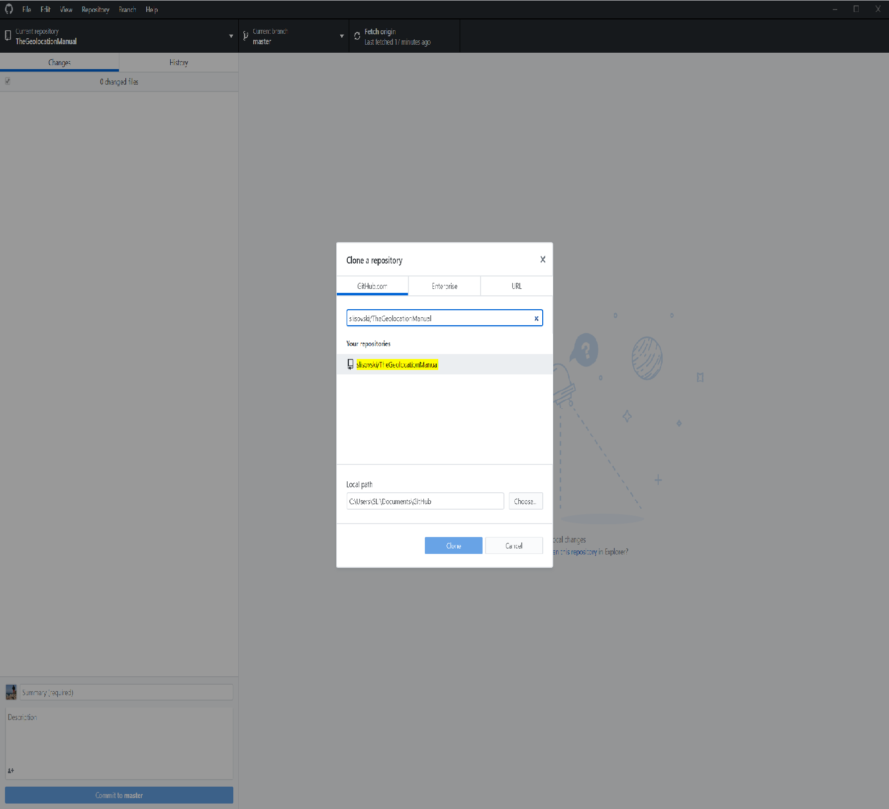

Chapter 10 Your contribution
We do consider this document to be a community endeavour for which we have given a starting point. We apprechiate any contribution in terms of thoughs on the current version, changes and additions. Arguably, your expereince with geolocation is valuable for the community and by adding it to this manual it can help users significantly. Fortunately, the GitHub and RStudio environemnts make it (relatively) easy to give access to the source code of this manual and to push your changes directly into the online version
It may seem combersome at first but it is worth the effort to get familiar with GitHub and make use of the massive potential of version control and developing as well as publishing code, such as this manual.
If you have not already created an account do so (www.github.com). And while RStudio has implemented a Git environment that allows direct communication with GitHub, we recommend to download the GitHub Desktop application if you are new to this world of version control. The application can be downloaded from: https://desktop.github.com/.
Once you have installed and loged into your account you can clone repositories that are already on GitHub or create new repositories via the file menu.
To get started with The Manual, choose clone a repository, define the local path where the data should be saved and type in slisovski/TheGeolocationManual and press Clone:

Navigate to the local folder that should now contain a subfolder called TheGeolocationManual. In this subfolder you will find a RStudio project file called “TheGeolocationManual.Rproj”. Open this file with a double click. In RStudio you are now working within this folder and in the Files window, you will find all the files that are part of The Manual.

The important files are the .Rmd files that contain all the code and text of The Manual. If you intent to edit something in the e.g. GeoLight section, open the 05-GeoLight.Rmd file and start editing. Make sure to save changes once you are done.
Back in the GitHub Application you can see all changes you have made that are different to the version your fetched from GitHub:

 Make sure to fetch (pressing Fetch origin) before you start making any edits in RStudio. This gives you the newest version and avoids conflicts with edits from other users!
Make sure to fetch (pressing Fetch origin) before you start making any edits in RStudio. This gives you the newest version and avoids conflicts with edits from other users!
It is important(required) to provide a comment for your commit (your changes). Please use somthing that makes sense and allows others to have a rough idea what your changes entail. Feel free to provide more information in the Decription such as “I have removed an obvious bug in line xx” or, “I have added text in the calibration section, please review!”. Next, press commit to contribution.
 GitHub allows to have different branches. This is a creat invention that is immensely usefull for such endavours; we can keep the current online version of The Manual untouched but make edits etc. to the code. Once we are happy with new edits and maybe with a complete new version we can merge the branches and update the master branch and thereby the online version. This makes sure that the online version is always running and that changes can be reviewed and revised before going online.
GitHub allows to have different branches. This is a creat invention that is immensely usefull for such endavours; we can keep the current online version of The Manual untouched but make edits etc. to the code. Once we are happy with new edits and maybe with a complete new version we can merge the branches and update the master branch and thereby the online version. This makes sure that the online version is always running and that changes can be reviewed and revised before going online.
To make sure that your changes will be submitted to the contribution branch select the correct branch in the menu:

The press Commit to contribution and if your want this commit to go online press Push origin.
Commit only logges the changes into the version control file on your computer, you have to Push origin to make sure that it is submitted to GitHub and visible for all other users!